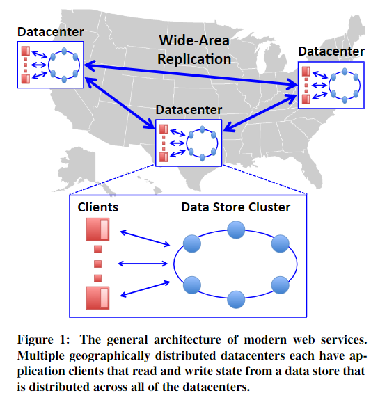
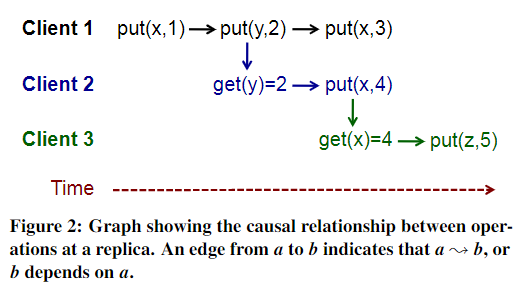
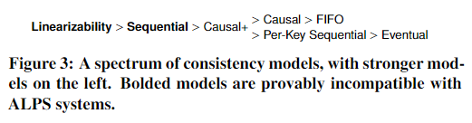
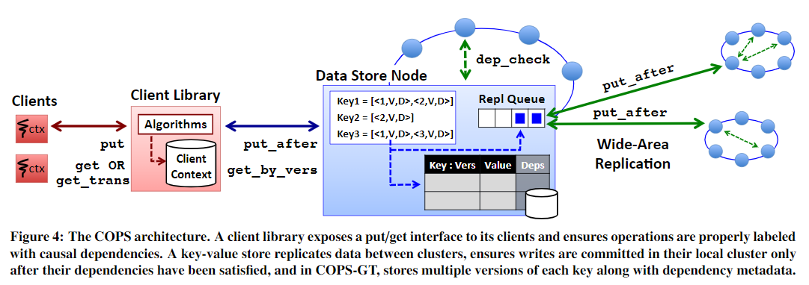
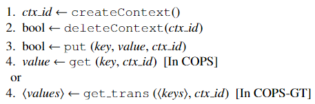
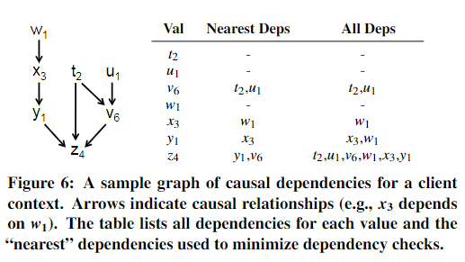
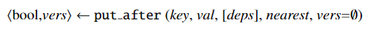
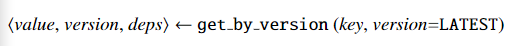
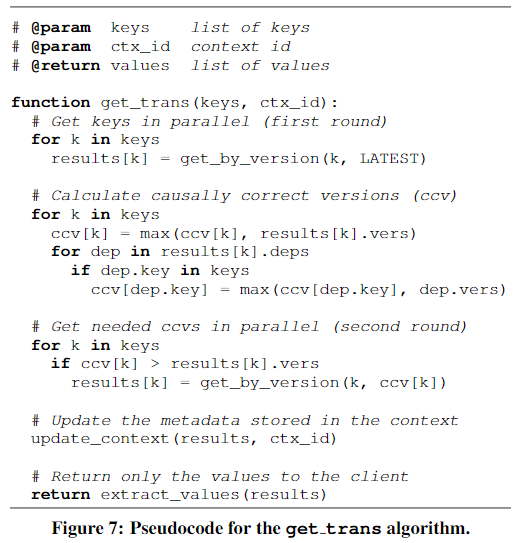

6.824 的第十三篇论文是 COPS——一种可提供具有收敛冲突处理的因果一致性(Causal Plus, Causal+)的 ALPS 键值存储系统，并且具有高可扩展性。在 COPS-GT 中引入的 GET 事务还能够在不锁定或阻塞的情况下获得多个 Key 的一致视图。COPS-GT 也能为常见工作负载提供与 COPS 类似的延迟、吞吐量和扩展性。
COPS 架构
COPS(Clusters of Order-Preserving Servers, 保序服务器集群)的 Causal+ 提供以下两个组件
- 因果一致性：确保数据存储尊重操作之间的因果依赖关系。
- 收敛冲突处理：确保副本不会永久性发散，并且对同一 Key 的冲突更新在所有站点上得到相同的处理。
基于以上两点，Causal+ 可确保 client 看到因果正确、无冲突且始终在进行中的数据存储。
COPS 有多个数据中心，每个数据中心都由前端服务器和后端 KV 数据存储组成。本地数据中心执行读写操作，在后台以 Causal+ 的顺序跨数据中心复制数据。

ALPS 系统与 Trade-off
CAP 定理证明不存在一个同时满足这三个条件的系统。大多数现代 Web 服务选择牺牲强一致性(Consistency)为代价（取而代之的是因果一致性）来满足可用性(Availability)和分区容错性(Partition tolerance)，因为这样做还能够为 client 操作提供低延迟(low Latancy)和高可扩展性(high Scalability)。我们将具有这四个属性的系统称为 ALPS 系统。
Causal+ Consistency
有关因果一致性，具体可参考这篇博客。
考虑 KV 数据存储定义了以下两个基本操作：put (key, val) 和 get (key) = val。模型中的一个重要概念是操作之间的潜在因果关系，表示为 \(\leadsto\)。这一关系受以下三条规则定义：
- 单线程内有序：如果 a 和 b 是单个执行线程中的两个操作，如果操作 a 发生在操作 b 之前，则 a \(\leadsto\) b；
- Gets From：如果 a 是一个
put操作，b 是一个get操作且返回 a 写入的值，那么 a \(\leadsto\) b； - 传递性：对于操作 a、b 和 c，如果 a \(\leadsto\) b 和 b \(\leadsto\) c，则有 a \(\leadsto\) c；
下图为一个示例：

- 根据单线程内有序规则得到
get (y) = 2\(\leadsto\)put (x, 4)； - 根据 Gets From 规则得到
put (y, 2)\(\leadsto\)get (y) = 2； - 根据传递性规则得到
put (y, 2)\(\leadsto\)put (x, 4)。
定义
因果一致：
get操作返回的值与定义的顺序一致，即写入值的操作必须出现在它之前的所有操作之后。上图中，
put (y, 2)必须出现在put (x, 4)之前，后者又发生在put (z, 5)之前。如果 Client2 看到get (x) = 1在get (x) = 4之后，便违反了因果一致性。根据博客所述，因果关系是一个偏序关系，可能存在 a \(\not\leadsto\) b 和 b \(\not\leadsto\) a，此时称 a 和 b 是并发的。系统可以按任何顺序复制两个不相关的
put操作，但如果 a 和 b 对同一个 Key 进行put，那么它们则会冲突，最终得到的值是不确定的，此时需要收敛冲突处理。收敛冲突处理：使用处理函数 \(h\) 以相同的方式在所有副本上处理所有冲突的
put。COPS 可以自定义 \(h\)，默认使用 last-writer-wins 规则，即后来的写入会覆盖较早的写入。
与其它模型对比
下图展示了几种主流的一致性模型及其一致性强弱关系。

- 线性化：它保持全局、实时排序；
- 可串行化：至少确保全局排序；
- 因果一致性：确保相关操作之间的部分排序；
- FIFO 一致性：它只保留执行线程内部的顺序，而不是线程之间；
- 键可串行化：这确保对于每个单独的 Key，所有操作都具有全局顺序；
- 最终一致性：副本最终会收敛于某个值。
前两者无法在 ALPS 系统中实现。
COPS 中实现 Causal+
COPS 系统中使用两个抽象概念：
- version：每个 Key 的不同值都能被表示为 \(key_{verision}\)，COPS 确保如果 \(x_i \leadsto y_j\)，则 \(i<j\)。一旦 COPS 中的副本返回
version = i的 \(key_i\)，则 Causal 确保之后只会返回因果序下version更大的值； - dependency：因果一致性规定如果 \(x_i \leadsto y_j\)，则 \(y_j\) 依赖于 \(x_i\)。COPS 确保仅在其所有依赖项 \(x_i\) 操作被复制后才复制对 \(y_j\) 的操作。
可扩展的因果关系
COPS 通过采用以下方法实现了可扩展性：
- 每个数据中心的节点负责 Key 空间的不同分区，且系统可以跟踪和强制存储在不同节点上的 Key 之间的依赖关系；
- 在元数据中表明依赖关系，这样复制 Key 时，接收方就能在提交前执行依赖性检查。
COPS 系统设计
COPS 总览
COPS 旨在跨数据中心运行，如下图所示。

客户端仅与本地 COPS 集群通信。系统将 Key 空间划分为若干分区，集群包含数据的完整副本，而集群内部节点存放单个分区。
为了提供与现有最终一致系统类似的 Causal+ 以及资源和性能开销。COPS/COPS-GT 必须做到以下几点：
- 最小化一致性保持复制的开销：通过利用因果依赖性固有的图形结构，无需检查所有依赖项。
- (COPS-GT)最小化空间需求：允许存储每个 Key 的多个版本与相关元数据，并使用 GC 来减少空间开销。
- (COPS-GT)确保快速获取传输操作：使用
get_trans算法减少get_by_version操作次数。
COPS 键值存储
公开的 API 为：get_by_version、put_after 和 dep_check。
对于 COPS-GT，系统保留旧版本的 KV 对，以支持 GET 事务。
数据格式
COPS 中是 < key: {version, value} >；而 COPS-GT 中是 < key: {version, value, deps} >。
其中
deps字段是多个依赖项< other_key: version >的列表。
分区
使用一致哈希对 Key 空间进行划分。每个 Key 都使用 Chain Replication 在少量节点上进行复制以保证容错。
即每个 Key 在每个集群中都有一个 Primary 节点。跨所有集群的 Key 的 Primary Set 称为其等效节点，等效节点总数与数据中心的数量成正比。
集群内部的 get 和 put 是可线性化的；跨集群操作则异步进行。
本地完成 Key 的写入后，Primary 将其放入复制队列中并异步发送到其它等效节点。这些节点收到后会执行依赖性检查，确保写入以因果一致的顺序发生，并且不阻塞读。
COPS 客户端库
公开的 API 为：get(in COPS) / get trans(in COPS-GT) 和 put。
客户端 API 由四个操作组成：

所有函数都有一个上下文参数，客户端库使用它跟踪每个操作之间的因果依赖关系。不同版本的 COPS 略有不同。
COPS-GT 中的上下文
客户端库将上下文存储在 < key, version, deps > 表中。客户端使用 ctx_id 引用上下文。
get：库会将该操作的 Key 及其因果关系添加到上下文中。put：库找出当前上下文中对应 Key 的最新依赖deps: D；一次成功的写入返回分配给写入值的version: v。然后客户端库将< key, v, D >添加到上下文中。
上下文包括最近的依赖项与所有的依赖项，如下图所示。

为了减少跟踪依赖关系所需的空间开销，COPS-GT 提供 GC 功能，一旦数据被所有 COPS 副本提交，其依赖关系就会被删除。
为了减少依赖性检查带来的时间开销，作出以下优化：考虑有依赖关系 \(a\leadsto b\leadsto c\)，如果提交 \(c\) 的节点经过检查得出 \(b\) 已提交，则无需检查 \(a\) 是否提交。这种必须检查的依赖关系（\(b\leadsto c\)）称为最近依赖关系，必须在客户端发送请求之前计算出。
get_trans需要所有依赖关系，所以上下文需要存全部依赖。
COPS 中的上下文
客户端库只需要知道最近的依赖关系。因为检索到的值在因果序下更新——比它的任何依赖项更接近，故只需存 < key, version > 即可，无需存储依赖项。
get：检索到的< key, version >被添加到上下文中。put：库使用当前上下文作为最近的依赖项，然后清除上下文，仅用本次put结果重新填充它。这个
put依赖于所有以前的< key, version>，因此比它们更接近。
在 COPS 和 COPS-GT 中写入
COPS 中的写操作有两个步骤：
- 同步写入本地集群；
- 异步复制到远程集群。
KV 存储公开以下 API 调用以提供这两种操作：

写入本地
客户端会计算完整的依赖集 deps，并识别出该值的最近依赖 nearest，然后将 put_after 的 version 设为 0。
- 在 COPS-GT 中，API 调用必须包含
deps； - 在 COPS 中，只需包括
nearest且不包括deps。
本地集群中的 Primary 为 Key 分配一个版本号并返回给客户端库。
版本号使用 Lamport 时间戳技术，高位为 Lamport 时钟，低位为唯一的节点标识符。 一旦 Lamport 得到确定，每个 Key 的所有写入的全局顺序也能确定，且隐式采用 last-writer-wins 策略进行收敛冲突处理。
基于 Lamport 的全局排序尊重 COPS 的因果一致性，即如果 \(a\leadsto b\)，则必有 \(Lamport(a) < Lamport(b)\)；反之不然。
put after 操作确保因果序——仅在其依赖列表中的所有条目都已写入后才将值提交给每个集群。
复制到远程
本地写入提交后，Primary 将写入操作异步复制到等效节点。此时 put_after 的调用包含 version。且与本地一样，deps 参数包含在 COPS-GT 中，但不包含在 COPS 中。
当然，这种方法需要接收方执行依赖性检查——向负责这些依赖项的本地节点发出 dep_check，当节点收到 dep_check 请求时，它会检查其本地状态：
- 如果依赖项已提交，它会立即响应该操作；
- 反之，它将阻塞直到所需的依赖项被写入。
仅当对最近依赖项的所有 dep_check 操作都成功时，处理 put_after 的节点才会提交写入的值。计算最近依赖关系的方式确保在提交值之前满足所有依赖关系，这反过来又确保了因果一致性。
在 COPS 中读取
客户端库向本地集群中负责 Key 的节点依次发起 get_by_version：

此读取可以读取 Key 的任一版本，在 COPS 中总是读取最新版本。收到响应后，客户端库将 < key, version, [deps] > 添加到上下文，并返回结果值。
COPS-GT 中的 GET 事务
COPS-GT 提供 get_trans 接口，仅需两轮 get_by_version。算法实现如下。

如果它检索到的版本 >= 依赖列表中的版本，则该结果的因果依赖关系得到满足。
垃圾、故障和冲突
GC 系统
COPS/COPS-GT 客户端存储上下文数据，COPS-GT 还保留多个版本的 Key 和依赖项。需要通过 GC 机制防止这些数据无限增长。
版本 GC（only COPS-GT）
COPS-GT 存储 Key 的旧版本，以响应 get_by_version 请求，但不会存所有版本。新版本写入后，旧版本仍会被保留一段时间，之后，就不会再有 get_by_version 调用请求旧版本，此时可以将旧数据回收。
而由于 get_trans 的第二轮需要访问旧版本数据，需通过可配置参数 trans_time 限制运行时间。如果超时，客户端库将重试 get_trans。
依赖 GC（only COPS-GT）
COPS-GT 存储依赖关系，以允许 GET 事务获取数据存储的一致视图。
和版本一样，依赖也不会无限存储。其它数据中心提交完写入并等待 trans_time 后回复 ACK 给本地数据中心，一旦得到所有数据中心的 ACK，本地数据中心就会执行清理，并通知其他数据中心也这样做。旧依赖项清理完后，COPS/COPS-GT 可以将 Key 的对应版本设置为 never-depend。
客户端上下文 GC
客户端库存储上下文来跟踪每个操作之间的因果依赖关系。同理，不需要的可以被删除。
COPS 通过两种方式进行上下文 GC：
一旦
put_after所有数据中心被提交，COPS 就会将该 Key 的对应版本标记为never-depend。客户端库调用get_by_verision后删除该项。这个过程是可传递的：任何一个
never-depend项所依赖的键必被标记为never-depend，所以它也可以从上下文中被 GC。COPS 节点根据
put_after操作移除自身依赖列表中version早于全局检查点时间（整个系统所有节点都满足的最新 Lamport 时间戳）的项，并将此检查点时间返回给客户端库，允许库从上下文中清除这些依赖项。全局检查点时间的计算：
- 节点首先从未完成的
put_after中，找出管辖 Key 范围内最小的 Lamport 时间戳； - 节点联系其他等效节点，并交换这一信息；
- 节点然后将这一信息 gossip 给数据中心内其它节点，最终找出整个 Key 空间的最小 Lamport。
- 节点首先从未完成的
容错
客户端故障
如果客户端出现故障，它只会停止发出新的请求，无需恢复。
键值节点故障
COPS 使用 ChainReplication 来提供容错，并参考了 FAWN-KV。
本地操作在之前的论文中有提到。而对于跨集群操作，本地 tail 将 put_after 操作复制到远程 head。远程 head 然后将 dep_check 操作发送到远程 tail。一旦检查完成，值将从 head 沿着链传播到 tail，tail 提交后回复本地数据中心。
依赖 GC 遵循类似模式；版本 GC 在每个节点上单独完成，并且可以像在单节点情况下一样运行；客户端上下文 GC 的全局检查点时间计算正常运行，并从 tail 处得到。
数据中心故障
面对此类故障，COPS 继续正常运行，但存在一些 Key 不一致。
- 本地故障：尚未复制的
put_After操作都将丢失。若数据中心仅网络分区，则只会出现数据不一致直到分区恢复； - 远程故障：本地复制队列所需的存储将会增长，因为无法将
put_after操作发送到故障数据中心，COPS/COPS-GT 将无法对这些依赖项进行 GC。系统管理员有两个选择：如果分区可能很快恢复，则允许队列增长；否则重新配置 COPS 以不再使用发生故障的数据中心。
冲突检测
COPS 默认使用 last-writer-wins 策略避免冲突检测，“last” 取决于版本号。
COPS 也可以为特定应用程序调用自定义收敛冲突处理程序，此时称为 COPS-CD。该系统加入了三个新策略：
- 所有
put操作都带有先前版本的元数据，其指明在本地集群上可见的最近的先前版本的 Key。 - 所有
put操作都隐式依赖于先前版本，这确保了新版本只会在其先前版本之后编写。这需要一个额外的dep_check操作。 - COPS-CD 有一个应用程序指定的收敛冲突处理程序，当检测到冲突时会调用该处理程序。
COPS-CD 写入 Key 的新版本 new 时会捎带该 Key 的上一个版本 prev，该 Key 的当前可见版本为 curr。当且仅当 prev != curr 时发生冲突。
总结
CPOS 基于因果一致性并进行了良好的扩展：
- 利用 Lamport 时间戳分配版本号及基于 Lamport 构建的因果依赖图很好地满足了 Causal+；
- 只需至多两轮查询，就能获取一个多 Key 且满足因果约束的视图；
- GC 机制在不破坏 Causal+ 的前提下大大减少空间开销；
- 在版本号的技术支持下，last-writer-wins 策略也提供了较好的安全性。
在不追求线性一致性的应用场景下，因果一致性相比于最终一致性更能保证安全性，而代价仅仅是牺牲一些性能，这是非常有意义的。